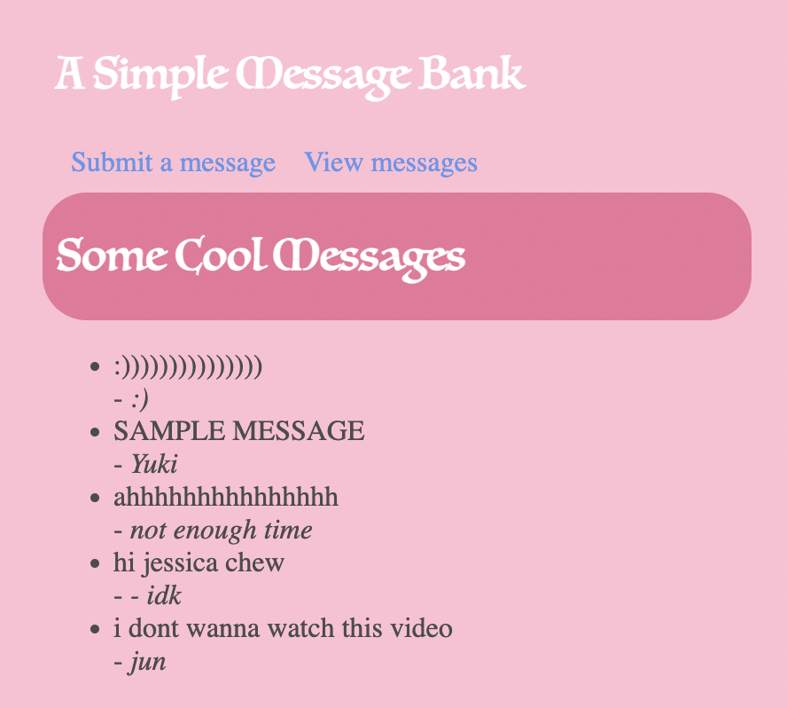

<!DOCTYPE html>
<html>
<head>
<link rel="stylesheet" href="{{ url_for('static', filename='style.css') }}">
</head>
<body>
<nav>
<h1>A Simple Message Bank</h1>
<!-- Navigation Links -->
<ul>
<li>
<a href="{{ url_for('submit') }}">Submit a message</a>
</li>
<li>
<a href="{{ url_for('view') }}">View messages</a>
</li>
</ul>
</nav>
<section class="content">
<header>{% block header %}{% endblock %}</header>
</section>
{% block content %}{% endblock %}
</body>
</html>Simple Message Web App
GitHub Repo URL: https://github.com/Yuki620/pic16b_hw3/tree/master/HW3
1. Enable Submissions
First, create a submit template with three user interface elements:
- A text box for submitting a message.
- A text box for submitting the name of the user.
- A “submit” button.
You may find it helpful to put navigation links (the top two links at the top of the screen) inside a template called base.html, then have the submit.html template extend base.html. You can find an example from our lecture.
base.html
We construct the base.html template so that we do not need to write the code for the web app title and the 2 navigation links for submitting and viewing messages every single time.
We use the css sheet style.css that we wrote for styling.
submit.html
Our submit.html is a child template of base.html, and it gives us the page for submitting messages.
There is an input text box for the message, and another one for the handle/name.
On the bottom, there is a submission button.
<!DOCTYPE html>
<html>
<body>
{% extends 'base.html' %}{% block header %}
<h1>{% block title %}Submit{% endblock %}</h1>
{% endblock %}{% block content %}
<form method="post">
<label for="message">Your message:</label>
<br>
<input type="text" name="message" id="message">
<br>
<label for="name">Your name or handle:</label>
<br>
<input type="text" name="handle" id="handle">
<br>
<input type="submit" value="Submit message">
</form>
{% endblock %}
</body>
</html>Write the function get_message_db()
get_message_db() should handle creating the database of messages.
- Check whether there is a database called
message_dbin thegattribute of the app. If not, then connect to that database, ensuring that the connection is an attribute ofg. To do this last step, write a line like dog.message_db = sqlite3.connect("messages_db.sqlite") - Check whether a table called messages exists in
message_db, and create it if not. For this purpose, the SQL commandCREATE TABLE IF NOT EXISTSis helpful. Give the table ahandlecolumn (text), and amessagecolumn (text). - Return the connection
g.message_db.
def get_message_db():
# see if message_db exists already
try:
return g.message_db
# if not then create it
except:
g.message_db = sqlite3.connect("messages_db.sqlite")
cmd = '''
CREATE TABLE IF NOT EXISTS messages (
handle text,
message text
)
'''
cursor = g.message_db.cursor()
cursor.execute(cmd)
return g.message_dbWrite the function insert_message(request)
insert_message(request) should handle inserting a user message into the database of messages.
- Extract the message and the handle from request. You’ll need to ensure that your submit.html template creates these fields from user input by appropriately specifying the name of the input elements. For example:
<input type="text" name="message" id="message">is what I used in my template to ensure that request.form["message"] contained the message input by the user. You should then return the message and the handle.
Using a cursor, insert the message into the message database. Remember that you’ll need to provide the handle and the message itself. You’ll need to write a SQL command to perform the insertion.
Note: when working directly with SQL commands, it is necessary to run db.commit() after inserting a row into db in order to ensure that your row insertion has been saved. Also, don’t forget to close the database connection!
def insert_message(request):
# Extract message and handle from the form data
msg = request.form["message"]
hdl = request.form["handle"]
# Get the database connection
db = get_message_db()
cursor = db.cursor()
# insertion of handle and message values into `messages` table
# `?` for value placeholders
insert_sql = '''
INSERT INTO messages (handle, message)
VALUES (?, ?)
'''
cursor.execute(insert_sql, (hdl, msg))
# commit the changes
db.commit()
# close the connection
cursor.close()
return "Message submitted!"Write a function to render_template() the submit.html template.
Since this page will both transmit and receive data, you should ensure that it supports both POST and GET methods, and give it appropriate behavior in each one. In the GET case, you can just render the submit.html template with no other parameters. In the POST case, you should call insert_message() (and then render the submit.html template).
@app.route('/', methods=['POST', 'GET'])
def submit():
# GET is to request data from a specified resource
if request.method=='GET':
return render_template('submit.html')
# POST is to send data to the server
else:
msg_status = insert_message(request)
return render_template('submit.html', msg_status=msg_status)2. Viewing Random Submissions
Write the function random_messages(n)
random_messages(n) will return a collection of n random messages from the message_db, or fewer if necessary. Don’t forget to close the database connection within the function!
def random_messages(n):
# Connect to the database
db = get_message_db()
cursor = db.cursor()
# SQL query to select n random messages
cmd = '''
SELECT * FROM messages
ORDER BY RANDOM() LIMIT ?
'''
cursor.execute(cmd, (n,))
messages = cursor.fetchall()
# Close the connection
db.close()
return messagesview.html
Next, write a new template called view.html to display the messages extracted from random_messages(n). This page will display n randomly chosen submitted messages and the corresponding handles/names.
<!DOCTYPE html>
<html>
<body>
{% extends 'base.html' %}{% block header %}
<h1>{% block title %}Some Cool Messages{% endblock %}</h1>
{% endblock %}{% block content %}
<ul>
{% for m in messages %}
<li>{{m[1]}} <br> - <em>{{m[0]}}</em></li>
{% endfor %}
</ul>
{% endblock %}
</body>
</html>Write a function to render view.html
This function should first call random_messages(n) to grab some random messages (I chose a cap of 5), and then pass these messages as an argument to render_template().
@app.route('/view/')
def view():
# get the messages and display on view
messages = random_messages(5)
return render_template('view.html', messages=messages)3. style.css
Be creative and style your web app however you wish!
4. Demonstration
Figure 1 is an example of me submitting a message. In the handle field is my name.

Figure 1.
In Figure 2, we see the 5 randomly chosen messages, with the second message as the submitted sample message shown in Figure 1.

Figure 2.